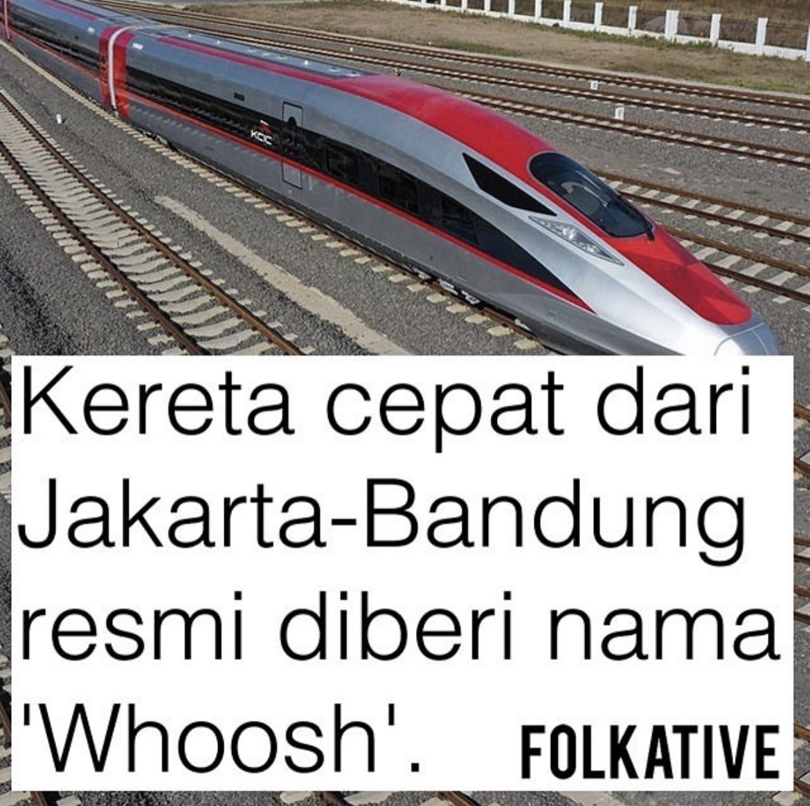

My Hometown
If you think about one famous city in Indonesia, what comes to your mind first? I bet you think about Bali, right? Well, here I would like to tell you about the capital city of Indonesia, which called DKI Jakarta (Special Capital Region of Jakarta). Jakarta is the economic, cultural and political centre of Indonesia. Furthermore, Jakarta's business and employment opportunities, along with its ability to offer a potentially higher standard of living compared to other parts of the country, have attracted migrants from across the Indonesian archipelago, making it a melting pot of numerous cultures.
What's new on Jakarta?
KCIC
The KCIC (Kereta Cepat Indonesia-China) Jakarta-Bandung high-speed train project is all about linking Jakarta, with the lively city of Bandung. It's like an exciting upgrade for travel between these two awesome places. This super-fast train will reduce travel time, make connections easier, and promote the local economy. Thanks to cool technology and teamwork across borders, KCIC Jakarta-Bandung is set to make traveling around the area a breeze and help nearby areas grow.